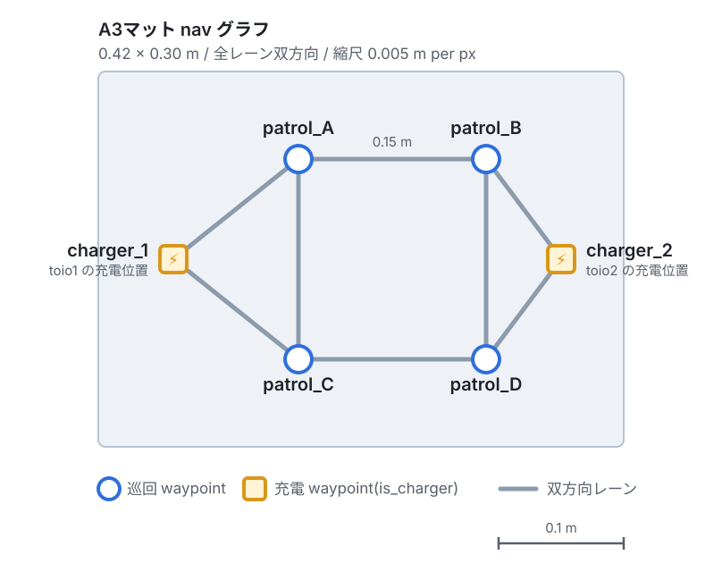
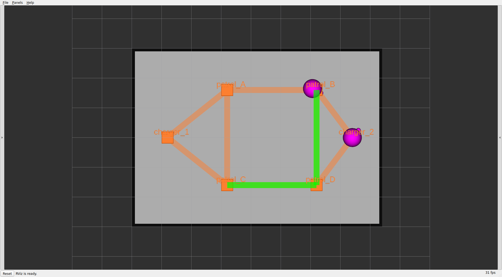
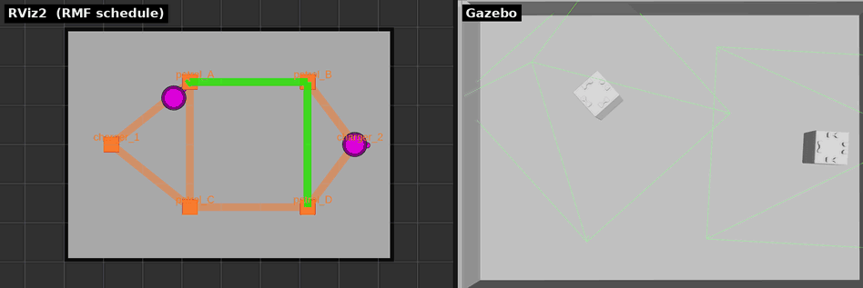

章4: 巡回と帰還(patrol)
← 前章: 1台を動かす | 目次 | 次章: 2台と入札 →
狙い
- 複数地点を周回するpatrol タスクを投げる
- タスクで指定する
patrol_Aなどが何なのか ── navグラフ(頂点とレーン)を理解する。ここはフリート処理の「地図」であり、章6の交通調停の舞台になる。 - タスク完了後に勝手にチャージャーへ帰る仕組み(
finishing_request)を知る
navグラフとは
RMFのロボットは自由空間を好きに動くのではなく、あらかじめ引かれた頂点(waypoint)とレーン(lane)の上を動く。この地図がnavグラフ。タスクで指定する patrol_A はこの頂点名で、マットごとに定義が違う。
A3マット(このチュートリアルの既定)
6頂点・8レーン、全レーン双方向。2台同時運用でも余裕がある。

6頂点(patrol_A〜patrol_D と、両端の充電地点 charger_1=toio1 / charger_2=toio2)を双方向レーンで結んだ格子。タスクで指定する patrol_A などはこの頂点名。
patrol_A–patrol_B–patrol_Dとpatrol_A–patrol_C–patrol_Dはどちらも0.31mで等長。この事実は章6の交通調停で効いてくる ── 等長ゆえに、同じ2地点でも通るレーンが変わりうる。
動かす
patrol_A → patrol_D を3周させる:
ros2 run rmf_demos_tasks dispatch_patrol -p patrol_A patrol_D -n 3 --use_sim_time
| 引数 | 意味 |
|---|---|
-p |
巡回先の頂点名。スペース区切りで複数、並べた順に訪問する |
-n |
周回数(省略時1周) |
-st |
開始までの遅延秒(省略時は即時) |
3地点以上も指定できる:
ros2 run rmf_demos_tasks dispatch_patrol -p patrol_A patrol_B patrol_D patrol_C -n 2 --use_sim_time
観察する
patrol実行中のRViz。緑の帯が rmf_traffic_schedule に予約された走行経路(スケジュール)で、稼働中のロボットにだけ出る。navグラフと床面図はそのまま残る。

緑の帯が予約された経路。toio1が巡回中、toio2はcharger_2 で待機。(スケジュールのfootprint/vicinity円は既定で非表示 ── 章10参照)

同じpatrol走行を2つのビューで並べたもの。左がRViz2(RMFスケジュール可視化 ── navグラフ・ロボット・予約経路)、右がtoio_gazebo(マット上の実際のキューブの動き)。toio1が巡回先を順に訪問していく。1. 周回と帰還を目で追う
- 落札した1台が現在地から
patrol_Aへ向かい、-pの順に訪問することを-n回繰り返す - 全周回を終えると、自機のチャージャーへ帰還して充電待機に戻る(toio1なら
charger_1)。これはフリート設定のfinishing_request: "charge"による自動挙動 ── タスクには「帰れ」と書いていないのに帰る
2. 「経路は毎回RMFが選ぶ」を確かめる
同じ patrol_A → patrol_D でも、通るレーンは毎回RMFが計画し直す。上で見た等長経路が2本あるので、実行のたびに違う道を通ることがある。RVizで経路帯(schedule)を見ると、頂点の指定と実際の経路が別物だと分かる。混んでいる方を避けて別レーンを選ぶ余地がここにあり、章6の交通調停はそれを使う。
3. タスクの進捗を状態で読む
/fleet_states や rmf_task_dispatcher のログで、TaskState が underway(実行中)→ completed(完了)と遷移する。巡回先を1つ訪問するごとに進捗が刻まれる。
理解する
patrolはgo_to_place(章3)の移動フェーズを、指定地点ぶん・指定周回ぶん並べたもの。navグラフはフリート全体で共有される地図なので、2台とも同じ頂点・レーンを使い、同じレーンを取り合う状況が起きる ── その調停は章6で扱う。
finishing_request は、タスクが終わったロボットをどうするか(charge / park / nothing)を決めるフリートの「片付け」ポリシーで、toioは charge(チャージャーへ帰す)。この帰還も1つのタスクとしてnavグラフ上を走るので、帰り道でも交通調停は効く。定義はフリート設定 toio_fleet_config_<mat>.yaml にあり、章7・章9で編集する。
確認課題
patrol_B→patrol_Cの2地点patrolを何度か投げ、同じ指定でも通るレーンが変わりうることをRVizで確認する。「頂点を指定する」ことと「経路を決める」ことは別、と体感する。- patrol完了後、ロボットが自分のチャージャーに戻るのを確認する。
charger_1に戻るのはどちらのロボットか?(→ ロボットとチャージャーの対応は固定。章7の充電計画で再登場する) - 2台とも空いている状態でpatrolを1本だけ投げると、どちらが動くか。なぜその1台かを次章の入札で解明する。
navグラフという舞台が分かったら、次は2台を登場させて入札を見る。
← 前章: 1台を動かす | 目次 | 次章: 2台と入札 →